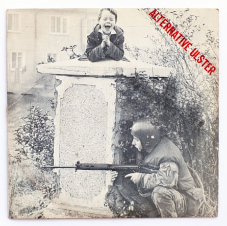
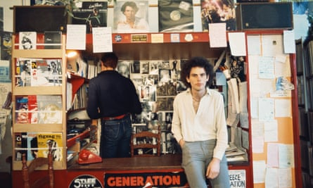

Jake Burns , songwriter, vocals
I was approached by Gavin Martin, who ran a fanzine called Alternative Ulster. He wanted to put a flexi-disc on the cover and said: “Can we use Suspect Device?” That was going to be Still Little Fingers’ debut single so I told him he couldn’t have that, but I would write him a song.
It’s the old adage – write about what you know. The opening line is: “There’s nothin’ for us in Belfast.” It couldn’t have been more teenage – “God, I’m bored.” Then the second verse referenced the army being on the streets. But that was actually what contributed to the boredom. Because of the situation in Northern Ireland , bands wouldn’t come and play. The only honourable exception, prior to punk, was Rory Gallagher, who came every year without fail.
Gordon Ogilvie, our co-manager, changed a couple of lines and we were good to go. These days, I could knock it up in my home studio and let Gavin hear the rough. But to hear it back then, he had to come to our next live show. We were all excited about what we thought – well, I certainly thought – was a good song. But at the bar afterwards, he told me he thought it was crap!
‘Lightning in a bottle’ … the cover of Alternative Ulster.Photograph: TheCoverVersion/Alamy
Things were happening fast for us because John Peel was playing Suspect Device into the ground. Island, the record label, flew us to London to record some demos. We really thought we’d hit the big time. Ed Hollis was producing – this was a man who had just had a Top 10 hit with Eddie and the Hot Rods’ Do Anything You Wanna Do. But he insisted on hiring in all this equipment we weren’t au fait with, so the demos weren’t very representative of how the band sounded. Unsurprisingly, Island passed.
We were thrown into limbo. We’d gone so far down the path with Island that we had quit our jobs. Then out of the blue, we got a phone call from Tom Robinson, who was looking for an opening act. We started to feel a bit of pressure in terms of needing something to raise our profile, and then the Rough Trade label suggested it put out Alternative Ulster.
In the interim, Gordon had managed to get the demo tapes from Island. We didn’t have the money to re-record it, but Rough Trade did pay for a remix. The single’s cover photo was taken by Milton Haworth, who had happened to be at a disturbance somewhere. In the midst of it all, he saw the soldier crouched down by a pillar with his gun and this little kid on top of the pillar laughing . It was lightning in a bottle in terms of photography.
We do an outdoor show every year in Belfast. We always finish with Alternative Ulster and it’s such a unifying call. I find it so pretentious when you say stuff like this – but when you stand on the stage and watch the audience’s reaction, it’s humbling.
Geoff Travis in the Rough Trade shop, London, circa 1977.Photograph: Estate Of Keith Morris/Redferns
Geoff Travis , producer and Rough Trade record shop and label founder
John Peel playing Suspect Device was the beginning of everything. We contacted Gordon Ogilvie and started buying large quantities of it to distribute. That’s how we got to know the band. Rough Trade had The Cartel [a record distribution organisation] and the idea was to bypass the existing conventional mechanisms and let the independent sector grow.
I never really knew the full story of what happened with Island. We did so well distributing Suspect Device that we simply asked if we could do the next single as a Rough Trade release, a one-off. Alternative Ulster was remixed by me with the engineer, Doug Bennett, at Olympic Studios in London. I didn’t do that much, but maybe made it a bit more lively. That was the first time I’d ever been in the studio. It was quite amusing.
What gave me the gall to do that without experience? I guess I just knew how I wanted it to sound. That was the beginning of my producer career. It was the times, it was the whole punk ethic where you just went and did stuff.
I’ve said this many times, but I just love Henry Cluney’s rhythm guitar. The way he played, it’s like a bar of steel or something. That was a big part of their sound. And Jake had that really great voice, played great guitar. He meant it – he was convincing. We were quite young ourselves. We didn’t really know huge amounts about SLF’s culture at that time, but we were learning. There wasn’t really time to sit down for a few hours and discuss politics, discuss the future of the world, discuss aims and aspirations. We just did stuff.